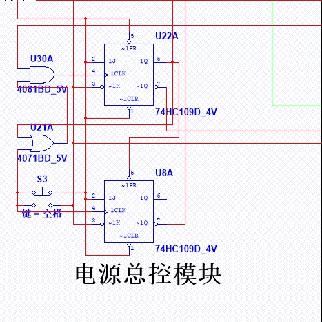

计1403 第八组 数电大作业
选题:自动化洗衣机
【需求分析：在一个定时时间内，控制洗衣机自动工作】
正转10s -> 反转20s -> 暂停10s -> ...-Loop- ->
-> [扩展流程]用户按下空格键，暂停工作 ->
-> -Loop-... -> 到达指定时间，停止
设计：5大模块
1、脉冲发生模块
用555震荡实现1s周期脉冲，作为全局时钟信号
2、用户定时模块
由用户设定洗涤时间，通过编码器编码为二进制
3、效果显示模块
永固展示剩余工作时间以及洗衣机当前工作模式
4、电源总控模块
通过两个JK边沿触发器，控制洗衣机启动、暂停
5、循环驱动模块
通过计数器实现洗衣机三种工作状态的循环转换
不同模块
分别处理不同功能，最后加以整合，完成设计要求
成员分工：
姓名 | 负责的方面 | 工作量
陈正 设计仿真 25%
孙豪 实验报告 25%
成泽龙 理论原理 25%
斯巴达 测试调整 25%
【使用说明】
qwerty键设置定时十位
123456789设置定时个位
按下空格键启动|暂停
